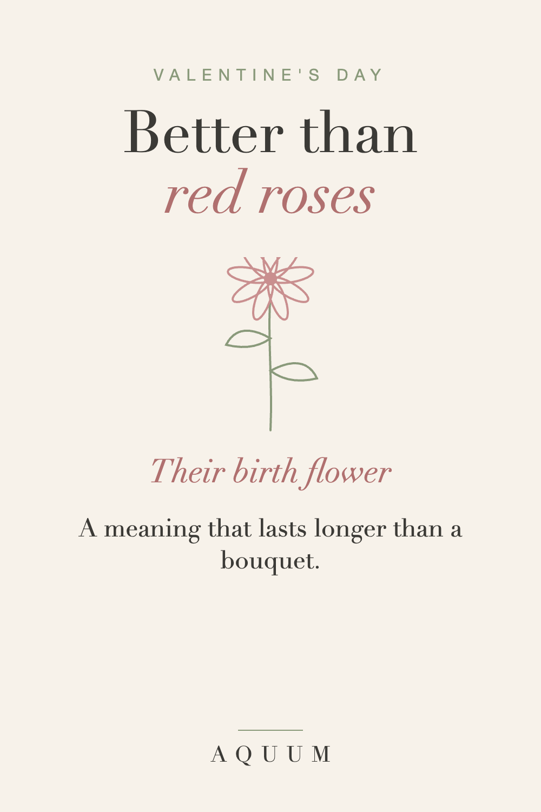

Valentine's Day Birth Flower Gifts: Something Better Than Red Roses
2026-09-30
Written by the team behind Aquum, a small birth flower gift shop. How we make money.

Red roses on Valentine's Day are fine, and they're also what everyone else is doing. Their birth flower is the personal version: it's theirs by birth, it has its own meaning, and it doesn't wilt in a week if you put it on something they'll keep.
Start with their flower
Find their month in what is my birth flower. Some of the most romantic meanings:
- June · Rose: love in all its forms. If they're a June baby, red roses finally mean something extra.
- June · Honeysuckle: devoted affection.
- July · Larkspur: an open heart.
- September · Morning glory: a love that renews itself every day.
- February · Primrose: youth and new love, "I can't live without you" in the Victorian language of flowers.
February's own flower: the violet
If your partner was born in February, Valentine's Day is also their birth month. The violet means quiet loyalty: a February gift that isn't another red heart. More in the February birth flower guide.
Gift ideas that outlast the bouquet
- A soft shirt or a mug with their flower, used long after February.
- Both your flowers together on matching gifts. See birth flower anniversary gifts.
- A framed print of their flower with the meaning underneath.
- A small bunch of their flower, fresh, with the gift and a card.
What to write
"Your flower means an open heart. It's the first thing I noticed about you."
Order early
Made-to-order gifts take about a week to be made and shipped in the US, and February mail is busy. Order by the end of January. More romantic ideas in our gifts for your wife or girlfriend.